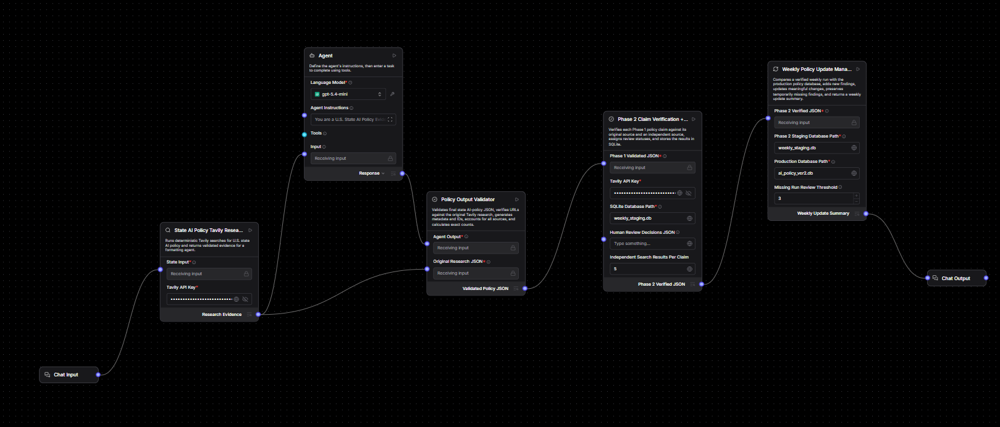

Fragmented sources
Policy evidence is scattered across state government, legislative, agency, and secondary sources.
An end-to-end agentic AI system that discovers state-level AI policy activity, validates structured findings, independently verifies claims, stores auditable evidence, tracks policy lifecycle stages, and turns the resulting data into an interactive analyst-facing intelligence platform.
Relevant information is distributed across executive orders, legislation, strategy documents, government programs, responsible-AI frameworks, workforce initiatives, task forces, and funding. A useful intelligence system must do more than collect links: it must distinguish unique initiatives, normalize lifecycle stages, preserve provenance, and expose weak evidence for review.
Policy evidence is scattered across state government, legislative, agency, and secondary sources.
Extracted statements require exact-source support, identifiers, dates, money values, and corroboration.
A bill can move from introduced to committee, chamber passage, governor action, signed, and effective.
Analysts need deduplicated initiatives, comparisons, evidence confidence, timelines, funding context, and review queues.
The Langflow pipeline separates initial policy research from structured validation and second-phase claim verification before producing weekly update summaries and database changes.

Deterministic web research for state AI-policy evidence.
Transforms research evidence into structured policy findings.
Validates URLs, metadata, dates, identifiers, and schema consistency.
Independent search and claim-support verification.
Stores findings, evidence, research runs, review decisions, and audit state.
Compares new verified research with prior data and summarizes material changes.
The dashboard distinguishes primary-source support from independent corroboration and preserves failed checks, evidence excerpts, source quality, decision reasons, and human-review actions.
Measures how strongly the original source supports the exact structured claim.
Measures independent support for the same claim from a separate source.
Bill/EO identifiers, dates, monetary values, action anchors, and contradiction signals are checked.
Human decisions are stored separately while preserving the original AI verification result.
Bubble size represents evidence count; color represents verification status.
Legislation is grouped into unique bills before staging. The platform conservatively reports the furthest confirmed stage reached by at least one identified bill without implying that every bill shares that status.
Established → Active → Recommendations → Completed
Exploring → Development → Draft → Final → Implementation
Full legislative lifecycle with failed/withdrawn tracked separately
Announced → Planned → Pilot → Implementation → Operational
Proposed → Announced → Established → Active → Expanded
Exploring → Framework → Policy → Implementation
Proposed → Announced → Appropriated → Allocated → Spent
The application exposes ten analyst views spanning national coverage, state drill-downs, verification, funding, policy milestones, evidence review, an AI assistant, and system health.
Unique initiatives, verified evidence, review backlog, funding, coverage map, and progress charts.
State-level governance, strategy, legislation, implementation, workforce, responsible AI, and funding.
Cross-state policy dimensions, unique initiative grouping, lifecycle staging, and evidence confidence.
Side-by-side progress, findings, verified evidence, funding, and legislative activity.
Support scores, corroboration, failed checks, source quality, and claim inspection.
Risk-prioritized human review with preserved AI decisions and audit trail.
Deduplicated funding records, verification status, and statewide vs initiative-linked interpretation.
Normalized milestones for bill passage, signing, strategy releases, governance, implementation, and funding.
Natural-language questions grounded in database rows and chart context.
Research freshness, evidence coverage, API status, review backlog, provenance, and system diagnostics.
Questions are first translated into deterministic state, year, category, verification, funding, and comparison filters. The optional language model then explains only the supplied database or chart context.
Structured filters and deterministic answers exist before LLM rewriting.
The model receives selected records/chart data rather than unrestricted policy knowledge.
System instructions prohibit fabricated policies, dates, bills, executive orders, amounts, sources, or verification outcomes.
If the AI service is unavailable, the deterministic database answer remains usable.
I'll compare the selected states using the currently loaded policy findings, verification status, funding records, and progress dimensions.
Research runs, validation timestamps, verification timestamps, evidence coverage, source accessibility, review backlog, FastAPI availability, database state, and human-review actions are surfaced for auditability.
Tracks the latest stored research, validation, and verification runs.
Identifies findings without corresponding evidence records.
High-risk or uncertain findings are surfaced for analyst action.
Health endpoint availability and latency are monitored from the dashboard.
Human verification decisions retain reviewer, notes, prior status, and timestamp.
Policy findings, evidence records, research runs, and review actions remain structured and queryable.
Workflow orchestration and structured policy research.
Targeted state AI-policy discovery and independent evidence search.
Validation, APIs, deterministic processing, health checks, and system integration.
Structured findings, evidence, research runs, deduplication, analytics, and review state.
Interactive national/state views, maps, comparisons, timelines, verification charts, and review tools.
Optional context-constrained explanations grounded in database and chart records.